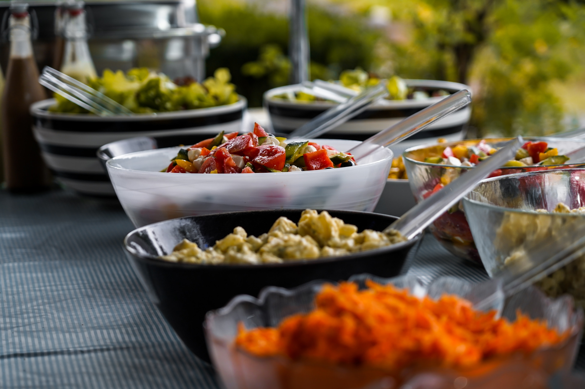

<div class="container-fluid about" id="about">
    <div class="row text-center">
        <div class="col-lg-12 col-md-12 col-sm-12 about-section" style="display: flex;justify-content: space-between;border: 4px solid white; height: fit-content;" >
            <div class="col-lg-6 col-md-6 col-sm-6 " style=" height: 100%; position: relative; border: 1px solid red;position: relative; align-items: center;">
                <div class="about-section-p" style="display: flex; flex-direction: column; position: relative; border: 2px dotted green;height: inherit;">
                    <div style="text-decoration: underline; border: 1px solid fuchsia">
                        <h2>
                            Our Story
                        </h2>
                    </div>
                    <div style=" position: relative; top: 25%; border: 1px solid yellow" class="our_story">
                        <p>
                            Welcome to Spring Caterers, <br> where culinary excellence meets impeccable service, making your events unforgettable experiences! With an extensive array of offerings, Spring Caterers guarantees a seamless, stress-free, and delightful experience for all our potential customers. At Spring Caterers, we believe that every event is unique, deserving of a personalized touch.
                            <br> <br>
                            For your convenience and to elevate the dining experience, we offer both buffet and sit-down service options. Our skilled servers, dressed in elegant attire, serve your guests with warmth and professionalism, creating an ambiance of refinement and hospitality. Spring Caterers takes pride in presenting each dish with artistic flair, turning every plate into a canvas of culinary artistry. No event is complete without delightful beverages, and our extensive drink selection promises to impress.
                        </p>
                    </div>
                </div>
            </div>
            <div class="col-lg-6 col-md-6 col-sm-6 spring_img hidden" style="height: fit-content;position: relative; padding: 1%; display: flex; flex-direction: column; border: 2px dotted green;">
              
              
            </div>
        </div>
    </div>
</div>